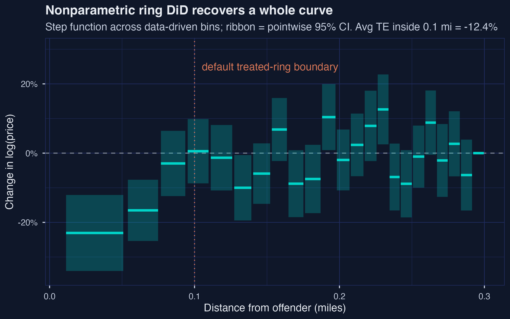
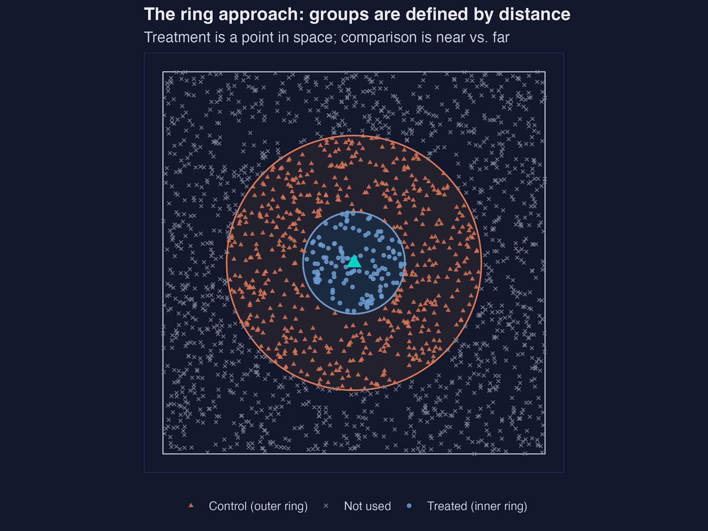
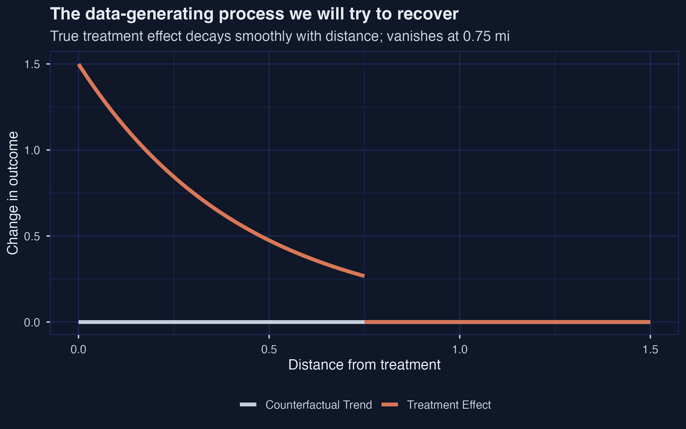
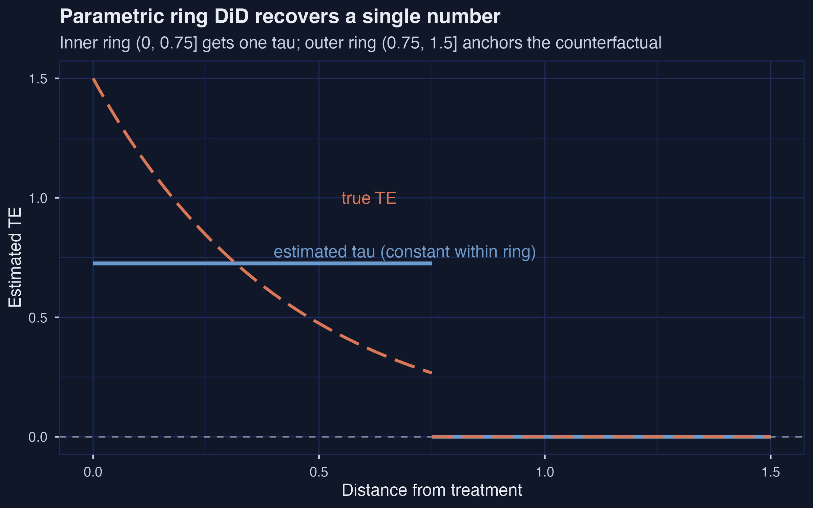
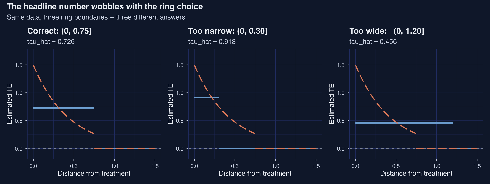
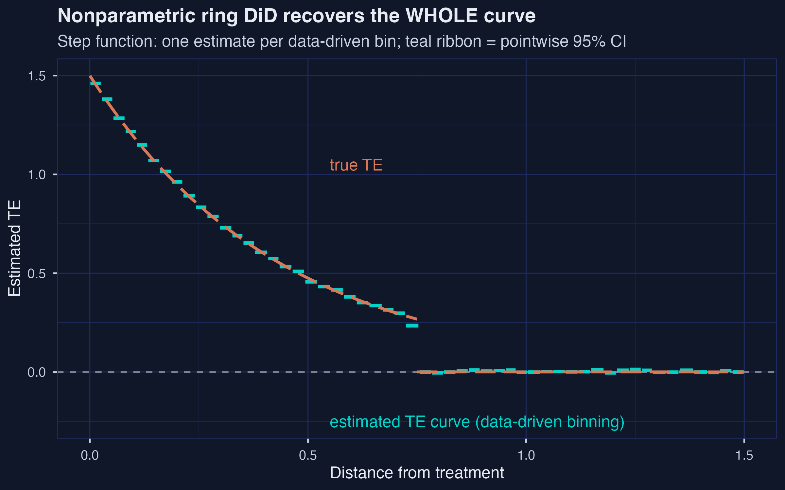
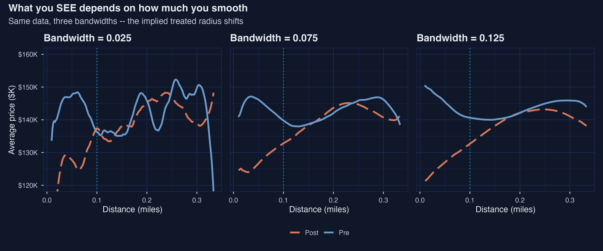
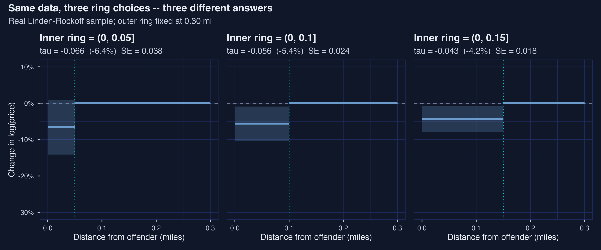

When distance defines treatment: the ring design
Nagoya University (GSID)
July 8, 2026
Act I
A registered sex offender moves into a neighborhood. To measure the price effect, compare homes close to the address with homes a little farther — before and after arrival.
But “close” is a choice. Linden & Rockoff drew the line at 0.1 mile. Move it, and the answer moves with it. Which radius?

Nonparametric ring DiD on Linden-Rockoff: 23 bins; two closest bins at −20.6% and −15.2%; the curve crosses zero at \(d \approx 0.094\) mi.
Act II
The ring DiD estimates the average treatment effect among the treated:
\[\tau = E[\Delta Y \mid d \le \bar d] - E[\Delta Y \mid d > \bar d]\]
Crucially, \(\bar d\) appears inside the expectation. Change the cutoff and you change the estimand — not just the precision.

Toy ring geometry: 126 treated, 566 control, 1,308 dropped out of 2,000 random points.
The textbook two-way fixed-effects form, with \(\Delta Y\) first-differenced:
\[Y_{it} = \alpha_i + \gamma_t + \tau\, D_i P_t + \varepsilon_{it}\]
| Estimator | Estimate | SE | True |
|---|---|---|---|
| First-differences | 0.3097 | 0.0258 | 0.30 |
| Two-way FE | 0.3097 | 0.0258 | 0.30 |
The two are algebraically identical — that is why the ring DiD is one line of feols().
\[\tau(d) = 1.5 \cdot \exp(-2.3\, d) \cdot \mathbf{1}\{d \le 0.75\}\]

True treatment-effect curve: \(\approx 1.5\) at the point, decaying smoothly, zero past 0.75 mi; mean over the affected region \(= 0.726\).

Parametric ring DiD at the correct cutoff recovers the truth: \(\hat\tau = 0.726\), 95% CI \([0.716, 0.736]\).

Same data, three ring choices: 0.913 (too narrow), 0.726 (correct), 0.456 (too wide). Both bad-case 95% CIs exclude the truth.
| Choice | \(\hat\tau\) | Bias |
|---|---|---|
| Too narrow (0, 0.30] | 0.913 | +25.7% — averages the steepest slice |
| Correct (0, 0.75] | 0.726 | none |
| Too wide (0, 1.20] | 0.456 | −37.1% — dilutes with zero-effect units |
feols() on first-differenced outcomesdelta_y is the first-differenced outcome; treat_ring is the 0/1 inner-ring indicator. The whole estimator is that one regression.

The nonparametric estimator recovers the whole TE curve — 53 quantile-spaced bins, no cutoff committed up front; left-most bin \(\hat\tau = 1.461\) vs truth 1.5.

Same data, three smoothing bandwidths — the implied treated radius shifts from ~0.10 mi (bw 0.025) to ~0.20 mi (bw 0.125).
Act III
−5.78%
parametric ring DiD, ATT at 0.1 mi · SE 0.0225 · 95% CI \([-10.4\%,\, -1.5\%]\) · \(n = 9{,}029\)

Three inner-ring cutoffs on the same data: ATT moves from −6.40% (0.05 mi) to −4.21% (0.15 mi) — a 52% relative spread driven entirely by the cutoff.
| Cutoff | ATT (%) | 95% CI |
|---|---|---|
| 0.05 mi | −6.40% | \([-14.1\%, +0.9\%]\) |
| 0.10 mi | −5.45% | \([-10.3\%, -0.9\%]\) |
| 0.15 mi | −4.21% | \([-7.8\%, -0.8\%]\) |
−20.6%
nonparametric bin 1 (first ~300 ft) · sample-weighted ATT inside 0.1 mi \(= -12.4\%\), about \(2.1\times\) the parametric −5.78%
Objection. A flexible, data-driven estimator must give the “true” causal effect — no researcher choice, no bias.
Response. Flexibility removes the cutoff choice, not the identifying assumptions. The ATT is identified only under local parallel trends and no anticipation — both untestable in this cross-section. binsreg discovers the shape; it cannot manufacture identification.